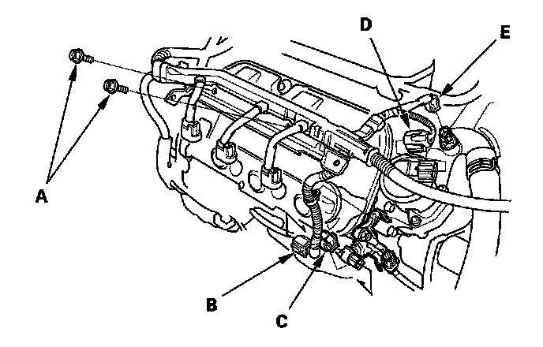
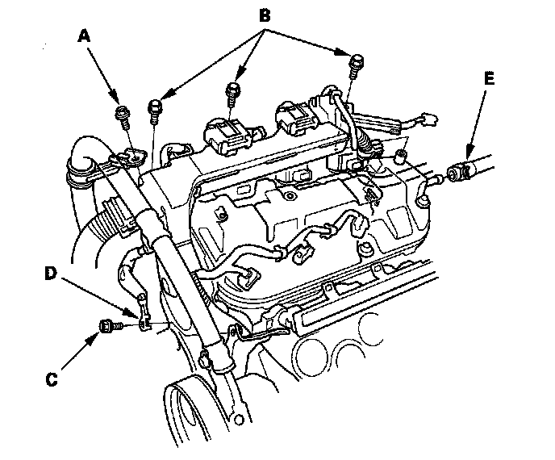
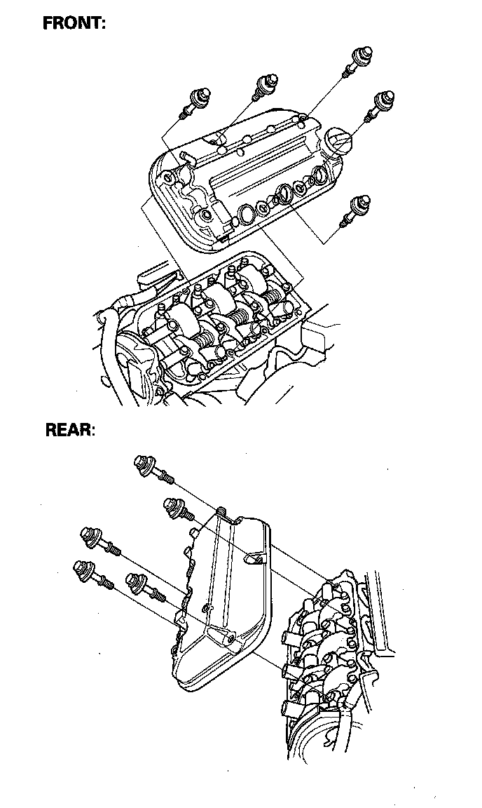

Cylinder Head Cover Removal
Cylinder Head Cover Removal1. Remove the intake manifold.
2. Remove the six ignition coils.
3. Remove the dipstick.
4. Remove the two bolts (A) securing the harness holder, and disconnect the front air fuel ratio (A/F) sensor connector (B), front secondary heated oxygen sensor (secondary H02S) connector (C), exhaust gas recirculation (EGR) valve connector (D) and engine coolant temperature (ECT) sensor 1 connector (E).

5. Disconnect the three injector connectors from the injectors on the rear side cylinder head.
6. Remove the power steering hose bracket mounting bolt (A), the harness holder mounting bolts (B), and the engine ground cable bolt (C).

7. Remove the engine ground cable (D) and breather hose (E).
8. Remove the cylinder head cover.
